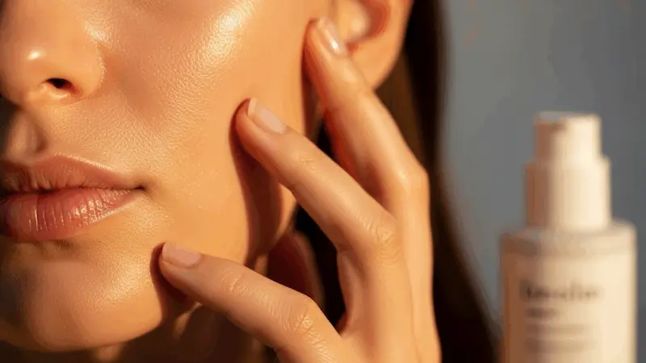
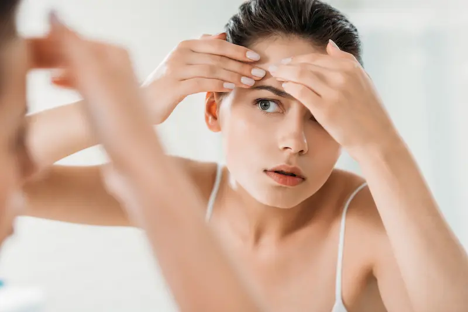
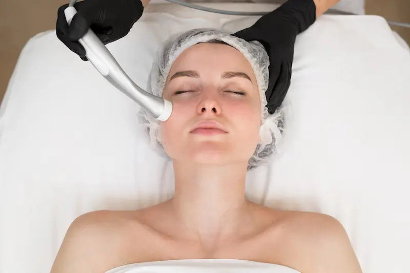
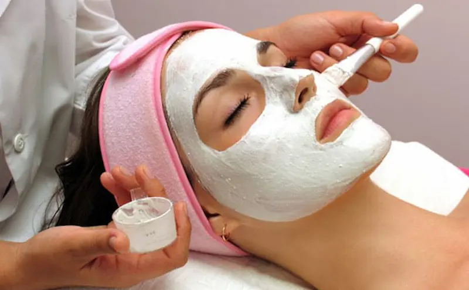
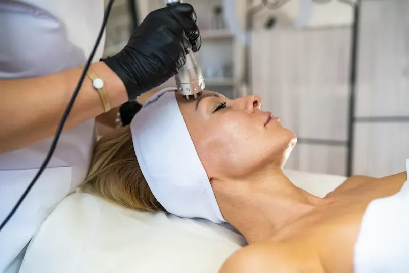
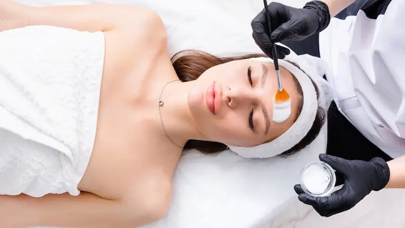
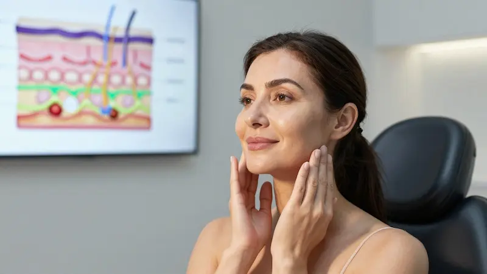

Ghidul paginii: proceduri cosmetologice și îngrijirea pielii
De ce starea pielii influențează machiajul
Cum textura pielii, hidratarea și sebumul determină rezistența și aspectul machiajului
Principalele probleme ale pielii
Excesul de sebum, uscăciunea, porii dilatați și nuanța neuniformă a tenului
Când este necesară îngrijirea cosmetologică
Situațiile în care îngrijirea de acasă nu mai este suficientă și sunt recomandate procedurile profesionale
Proceduri cosmetologice populare
Curățarea facială, peelingurile, biorevitalizarea și tratamentele realizate cu aparatură
Cum alegi procedura potrivită
Cum identifici nevoile pielii și eviți procedurile inutile
Catalog de servicii cosmetologice (în curând)
Construim un catalog cu specialiști și clinici pentru a facilita alegerea tratamentelor potrivite
De ce starea pielii influențează rezistența și aspectul machiajului
Chiar și cel mai bun machiaj depinde direct de starea pielii. Dacă pielea este deshidratată, produce exces de sebum sau are o textură neuniformă, produsele de machiaj se aplică mai greu și își pierd mai repede aspectul impecabil.
1. Textura pielii influențează rezultatul final
O piele netedă și bine îngrijită oferă baza ideală pentru fondul de ten. Porii dilatați, descuamarea sau imperfecțiunile fac machiajul mai vizibil și mai puțin uniform.
2. Hidratarea este esențială pentru rezistență
Pielea deshidratată poate absorbi produsele de machiaj și poate accentua aspectul uscat al tenului. În schimb, excesul de sebum poate reduce rezistența acestora. Echilibrul este cheia unui machiaj de durată.
3. Sebumul poate îmbunătăți sau compromite machiajul
Producția excesivă de sebum favorizează apariția luciului și poate determina deplasarea produselor de machiaj. Controlul acestuia reprezintă un pas important în pregătirea pielii.
4. Starea pielii influențează cantitatea de machiaj necesară
Cu cât pielea este mai sănătoasă și mai uniformă, cu atât este nevoie de mai puține produse pentru a obține un aspect natural. Problemele pielii necesită adesea acoperire suplimentară.
5. Îngrijirea este baza unui machiaj reușit
O rutină corectă de îngrijire și procedurile cosmetologice adecvate pot reduce imperfecțiunile și pot transforma machiajul într-un element de completare, nu de corectare.
Un machiaj frumos începe întotdeauna cu o piele sănătoasă și îngrijită. De aceea, îngrijirea pielii nu este un detaliu, ci fundamentul oricărui rezultat estetic reușit.
Principalele probleme ale pielii care influențează aspectul machiajului


Majoritatea dificultăților legate de machiaj nu sunt cauzate de produsele cosmetice, ci de starea pielii. Dacă există un dezechilibru, chiar și produsele premium pot oferi rezultate sub așteptări.
1. Excesul de sebum
Producția excesivă de sebum favorizează apariția luciului nedorit, reduce rezistența machiajului și poate determina deplasarea fondului de ten.
2. Uscăciunea și descuamarea
Pielea deshidratată evidențiază imperfecțiunile, iar produsele de machiaj se pot aplica neuniform și pot accentua zonele uscate.
3. Porii dilatați
Porii devin mai vizibili după aplicarea fondului de ten, mai ales atunci când pielea nu este pregătită corespunzător.
4. Nuanța neuniformă și urmele post-acneice
Petele pigmentare și semnele lăsate de acnee necesită adesea o acoperire mai mare, ceea ce poate reduce aspectul natural al machiajului.
5. Pierderea fermității și tenul tern
Pielea poate părea obosită și lipsită de vitalitate, iar machiajul nu reușește întotdeauna să ofere efectul de prospețime dorit.
Toate aceste probleme pot fi îmbunătățite printr-o rutină adecvată de îngrijire și prin proceduri cosmetologice profesionale care acționează în profunzimea pielii.
Când este necesară îngrijirea cosmetologică – semne că pielea are nevoie de ajutor profesional
Îngrijirea realizată acasă reprezintă baza unei pieli sănătoase, însă există situații în care aceasta nu mai este suficientă. Dacă problemele persistă sau se agravează, este recomandată consultarea unui specialist.
Procedurile cosmetologice permit tratarea cauzelor și nu doar a simptomelor, contribuind la îmbunătățirea texturii pielii, a nivelului de hidratare și a aspectului general al tenului.
Dacă aceste probleme persistă o perioadă îndelungată, este posibil ca pielea să aibă nevoie de tratamente profesionale și de o abordare personalizată.
Află mai multe despre pregătirea pielii pentru machiaj

Proceduri cosmetologice populare pentru îmbunătățirea aspectului pielii
Procedurile cosmetologice sunt concepute pentru a îmbunătăți calitatea pielii în profunzime, contribuind la curățare, hidratare, regenerare și corectarea diferitelor imperfecțiuni care nu pot fi rezolvate întotdeauna doar prin îngrijirea de acasă.
Procedurile efectuate regulat pot contribui la obținerea unei pieli mai netede, mai uniforme și mai receptive la îngrijire și machiaj.
Alegerea procedurilor trebuie realizată întotdeauna în funcție de tipul pielii, nevoile individuale și obiectivele urmărite.
Descoperă problemele pielii și soluțiile disponibile → Catalog de servicii cosmetologice (în curând) →


Cum alegi procedura cosmetologică potrivită
Alegerea unei proceduri cosmetologice nu depinde doar de dorința de a îmbunătăți aspectul pielii, ci și de caracteristicile actuale ale acesteia, nivelul de sensibilitate și problemele existente.
Alegerea unei proceduri nepotrivite poate duce la lipsa rezultatelor sau chiar la agravarea unor probleme ale pielii.
Din acest motiv, specialiștii recomandă întotdeauna o analiză a pielii și o consultație individuală înainte de începerea oricărui tratament.
O abordare profesională permite combinarea procedurilor care se completează reciproc și oferă rezultate mai vizibile și de durată.
Află mai multe despre ingredientele din produsele cosmetice → În curând: recomandări și servicii oferite de specialiști →


Catalog de servicii cosmetologice și specialiști — în curând pe site
Lucrăm la crearea unui catalog de clinici cosmetologice și specialiști care vă va ajuta să găsiți procedurile potrivite în funcție de starea pielii, rezultatele dorite și nevoile individuale.
În viitor, aici veți putea descoperi informații despre cele mai populare proceduri, veți putea cunoaște specialiști și veți putea alege soluțiile de îngrijire potrivite pentru dumneavoastră.
Această secțiune este în dezvoltare, însă deja construim baza de date cu specialiști și clinici care vor face parte din viitorul catalog.
Accesează secțiunea ServiciiSunteți cosmetolog sau reprezentați o clinică?
Construim un catalog de servicii cosmetologice și invităm specialiști, clinici și saloane de înfrumusețare să ni se alăture.
Dacă doriți să vă prezentați serviciile și să faceți parte din viitorul nostru catalog, contactați-ne pentru a discuta posibilitățile de colaborare și promovare.
În această etapă formăm baza de parteneri și colectăm informații despre specialiști și clinici.
Contactează-ne pentru promovareÎntrebări frecvente despre îngrijirea cosmetologică
De ce am nevoie de îngrijire cosmetologică dacă îmi îngrijesc pielea acasă?
Îngrijirea de acasă ajută la menținerea sănătății pielii, însă nu poate rezolva întotdeauna problemele mai profunde. Procedurile profesionale acționează la un nivel diferit și pot îmbunătăți aspectul pielii mai rapid și mai eficient.
Când ar trebui să merg la un cosmetolog?
Dacă vă confruntați cu exces de sebum, uscăciune, pori dilatați, urme post-acneice, pete pigmentare sau un ten lipsit de luminozitate, o consultație de specialitate vă poate ajuta să identificați cauza și să alegeți tratamentul potrivit.
Care sunt cele mai populare proceduri cosmetologice?
Printre cele mai solicitate proceduri se numără curățarea facială, peelingurile chimice, tratamentele de hidratare, biorevitalizarea și diverse proceduri cu aparatură pentru îmbunătățirea aspectului și texturii pielii.
Cum aleg procedura potrivită?
Alegerea depinde de tipul pielii, vârstă, problemele existente și rezultatul dorit. De aceea, majoritatea specialiștilor recomandă o evaluare a pielii și o consultație personalizată înainte de începerea tratamentelor.
Procedurile cosmetologice pot îmbunătăți aspectul machiajului?
Da. O piele mai uniformă, bine hidratată și îngrijită necesită mai puține produse de acoperire, iar machiajul arată mai natural și rezistă mai mult timp.
Este necesară îngrijirea după procedurile cosmetologice?
Da. După proceduri este important să respectați recomandările specialistului, să utilizați produse adecvate de îngrijire și să protejați pielea de soare prin aplicarea unui produs cu SPF.
De la ce vârstă se poate începe îngrijirea cosmetologică?
Îngrijirea cosmetologică poate fi benefică la orice vârstă. În tinerețe ajută la controlul excesului de sebum și al imperfecțiunilor, iar mai târziu contribuie la menținerea hidratării, fermității și aspectului sănătos al pielii.
Unde pot găsi un cosmetolog sau o clinică de încredere?
Lucrăm la dezvoltarea unui catalog de servicii cosmetologice și specialiști. În curând veți putea găsi pe site informații despre profesioniști, proceduri și soluții personalizate pentru diferite nevoi ale pielii.